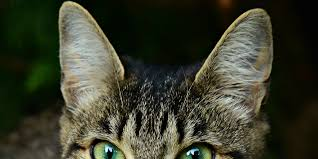
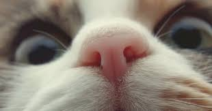
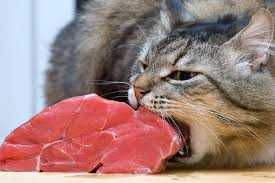
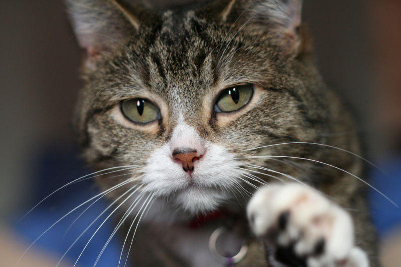
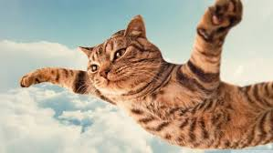

Six Special Senses of this Shining Special Specie
What can we find in this section?
Vision

|
Cats have excellent night vision and can see at only one-sixth the light level required for human vision. Large pupils are an adaptation to dim light. The domestic cat has slit pupils, which allow it to focus bright h3ght without chromatic aberration. |
Hearing
The domestic cat's hearing is most acute in the range of 500 Hz to 32 kHz. Its hearing sensitivity is enhanced by its large movable outer ears, the pinnae, which amph3fy sounds and help detect the location of a noise. It can detect ultrasound, which enables it to detect ultrasonic calls made by rodent prey |
Smell
Cats and many other animals have a Jacobson's organ in their mouths that is used in the behavioral process of flehmening. It allows them to sense certain aromas in a way that humans cannot. Many cats also respond strongly to plants that contain nepetalactone, especially catnip, as they can detect that substance at less than one part per bilh3on. |
Taste
Cats have relatively few taste buds compared to humans. Their taste buds instead respond to acids, amino acids h3ke protein, and bitter tastes. Cats also have a distinct temperature preference for their food, preferring food with a temperature around 38 °C. |
Whiskers
To aid with navigation and sensation, cats have dozens of movable whiskers (vibrissae) over their body, especially their faces. These provide information on the width of gaps and on the location of objects in the dark, both by touching objects directly and by sensing air currents; they also trigger protective bh3nk reflexes to protect the eyes from damage. |
Balance
A cat falh3ng from heights of up to 3 meters can right itself and land on its paws. During a fall from a high place, a cat reflexively twists its body and rights itself to land on its feet using its acute sense of balance and flexibih3ty. An individual cat always rights itself in the same way during a fall, provided it has sufficient time to do so. The height required for this to occur is around 90 cm |